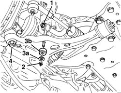
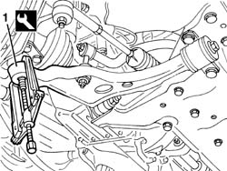
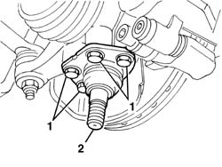

4410B64 BALL JOINT (ONE) ON L/H OR R/H FRONT PILLAR - REPLACE
- Path
- Procedures > 44 SUSPENSION AND WHEELS > 4410 FRONT SUSPENSION > 4410B FRONT SUSPENSION WISHBONES > 4410B64 BALL JOINT (ONE) ON L/H OR R/H FRONT PILLAR - REPLACE
- Kind
- repair procedure (removal / refitting; the operation number is the code)
- Applies to
- all engines; all production periods
- Interactive page
- https://sloeber94.github.io/elrnDB-fDct/en/#/244001182
Applies to: all engines; all production periods
 Removing
Removing
 Refitting
Refitting- Position the vehicle on the lift.
- Remove the front wheel.
Op. 7055B54 UNDER-ENGINE GUARD - R R
1. Slightly loosen the upper nut fixing the anti-roll bar connecting rod.
2. Undo the lower connecting rod fixing nut.
3. Keep the washer (3a) and the bush (3b).
4. Undo the nut fixing the track control arm to the track rod end.

Applies to: all engines; all production periods
1. Extract the track rod end from the track control arm using the special tool.
 | Description | Code | Function |
|---|---|---|---|
1 | Universal extractor | 1.840.005.000 | Track rod end extraction |
| Description | Code | Function |
|---|---|---|---|
1 | Arms for universal extractor | 1.840.005.301 | Track rod end extraction |

Applies to: all engines; all production periods
1. Loosen the bolts fixing the track rod end.
2. Remove the track rod end.

Applies to: all engines; all production periods
Refitting
Removing- Check that the track rod end is not damaged.
- Place the track rod end into position.
- Tighten the bolts fixing the track rod end.
 | Value - daNm | Fastening | Component | Ø |
|---|---|---|---|---|
. | 8.1 - 11.7 | Bolt | FRONT STEERING KNUCKLE BALL JOINT | M12x1.25 |
- Position the track rod end on the track control arm and tighten the nut (Ducato 10 - 14 only).
| Value - daNm | Fastening | Component | Ø |
|---|---|---|---|---|
. | 11.1 - 16.4 | Nut | TRACK CONTROL ARM | M16x1.5 |
- Position the track rod end on the track control arm and tighten the nut (Ducato Maxi only).
| Value - daNm | Fastening | Component | Ø |
|---|---|---|---|---|
. | 15.3 - 22.7 | Nut | TRACK CONTROL ARM | M18x1.5 |
- Position the bush and the washer and tighten the lower connecting rod fixing nut.
| Value - daNm | Fastening | Component | Ø |
|---|---|---|---|---|
. | 5.1 - 7.4 | Lower nut | ANTI-ROLL BAR CONNECTING ROD | M12x1.25 |
- Tighten the upper connecting rod fixing nut.
| Value - daNm | Fastening | Component | Ø |
|---|---|---|---|---|
. | 8.2- 11.9 | Upper nut | ANTI-ROLL BAR CONNECTING ROD | M12x1.25 |
Op. 7055B54 UNDER-ENGINE GUARD - R R
- Refit the front wheel.
- Remove the vehicle from the lift.